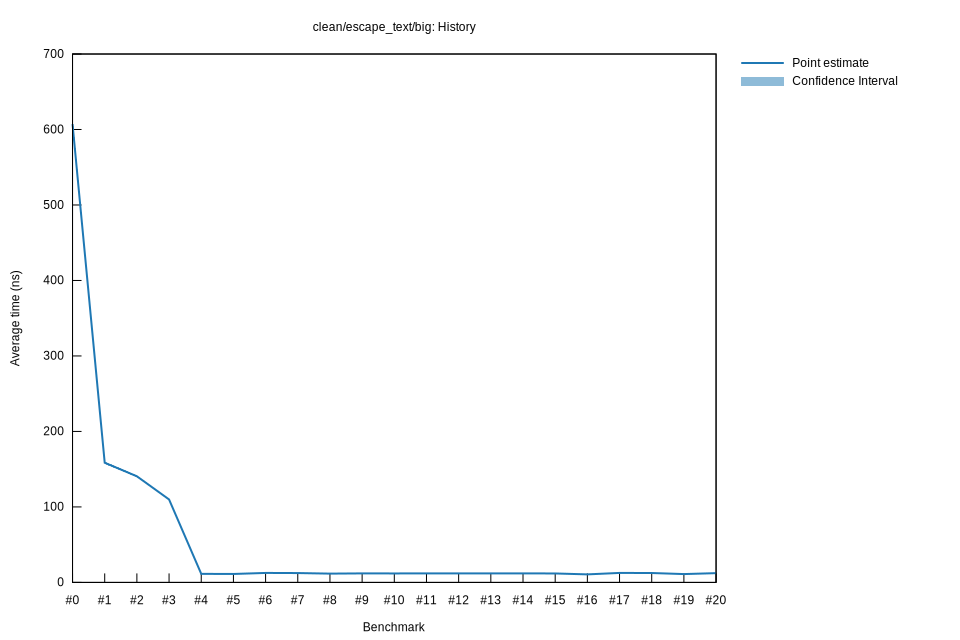

# 42023-01-13T17:02:27-08:00
|
Lower Bound |
Estimate |
Upper Bound |
| Value: |
11.27ns |
11.31ns |
11.36ns |
| Throughput: |
26151.09MiB/s |
26049.16MiB/s |
25939.72MiB/s |
| Change in Value: |
-89.803% |
-89.712% |
-89.625% |
| Change in Throughput: |
+880.63% |
+872.04% |
+863.84% |
No change in performance detected.
# 32023-01-13T16:59:04-08:00
|
Lower Bound |
Estimate |
Upper Bound |
| Value: |
109.34ns |
109.86ns |
110.54ns |
| Throughput: |
2695.02MiB/s |
2682.41MiB/s |
2665.97MiB/s |
| Change in Value: |
-22.495% |
-21.753% |
-20.980% |
| Change in Throughput: |
+29.024% |
+27.801% |
+26.551% |
No change in performance detected.
# 22023-01-13T16:57:05-08:00
|
Lower Bound |
Estimate |
Upper Bound |
| Value: |
139.52ns |
140.56ns |
141.75ns |
| Throughput: |
2112.17MiB/s |
2096.49MiB/s |
2078.84MiB/s |
| Change in Value: |
-12.136% |
-10.981% |
-9.8954% |
| Change in Throughput: |
+13.812% |
+12.336% |
+10.982% |
No change in performance detected.
# 12023-01-13T16:55:04-08:00
|
Lower Bound |
Estimate |
Upper Bound |
| Value: |
156.79ns |
158.51ns |
160.21ns |
| Throughput: |
1879.43MiB/s |
1859.14MiB/s |
1839.37MiB/s |
| Change in Value: |
-74.678% |
-74.276% |
-73.908% |
| Change in Throughput: |
+294.91% |
+288.74% |
+283.26% |
No change in performance detected.
# 02023-01-13T16:53:11-08:00
|
Lower Bound |
Estimate |
Upper Bound |
| Value: |
599.55ns |
607.15ns |
617.87ns |
| Throughput: |
491.51MiB/s |
485.36MiB/s |
476.94MiB/s |